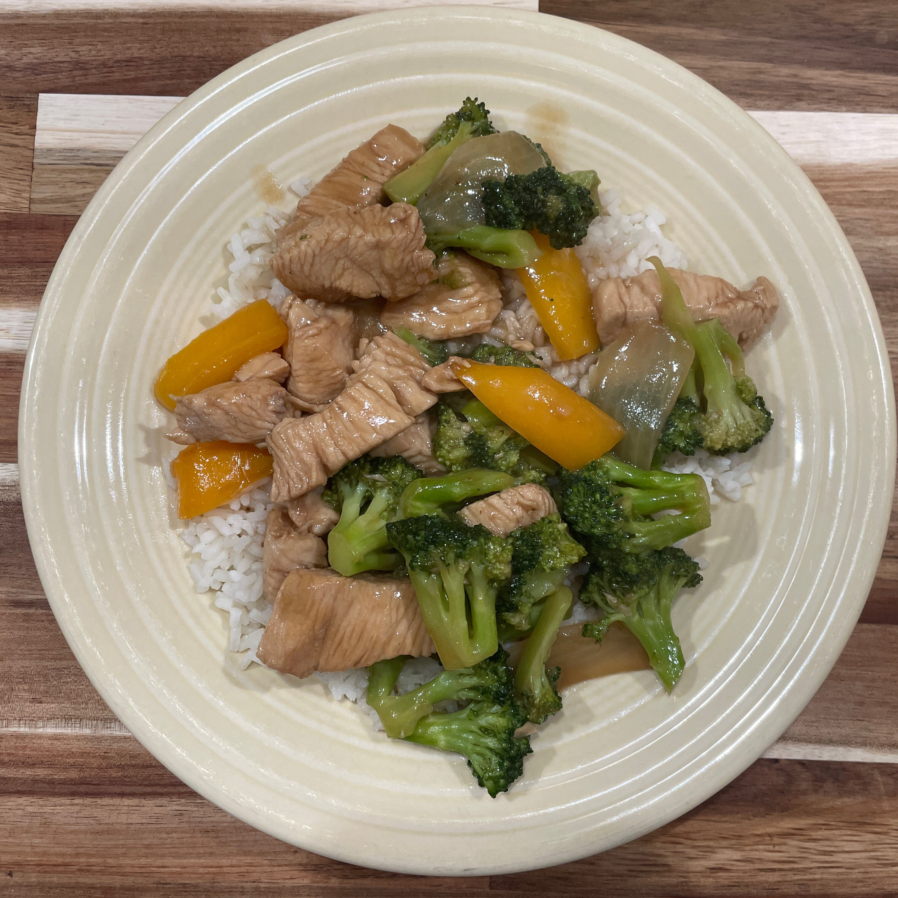

Chicken & Broccoli Stirfry


Ingredients
- 1 pound of chicken breasts
- Broccoli floretts
- soy sauce
- white rice
- black pepper
Directions
- Combine soy sauce and 1 tablespoon cornstarch in a glass bowl or zip-top bag. Add chicken; stir to coat. Remove all air from baggie before sealing, or cover the bowl. Refrigerate at least 30 minutes.
- Combine boiling water and bouillon granules in another bowl, stir until dissolved. Add remaining cornstarch and ginger; stir to combine.
- Heat half of the canola oil and 1 tablespoon sesame oil to 365 degrees F (185 degrees C) in an electric skillet or in a heavy skillet over medium-high heat. Add broccoli, bell peppers, onion, and garlic. Stir-fry until crisp-tender, 5 to 7 minutes. Remove from the skillet with a slotted spoon to a serving dish.
- Heat remaining canola oil and sesame oil in same skillet to 365 degrees F (185 degrees C) or medium-high heat. Add chicken mixture and crushed red pepper. Stir-fry until chicken is no longer pink in the centers and juices run clear, 7 to 10 minutes. Return vegetables to the skillet. Add bouillon mixture. Stir until thickened. Stir in optional almonds.
Home